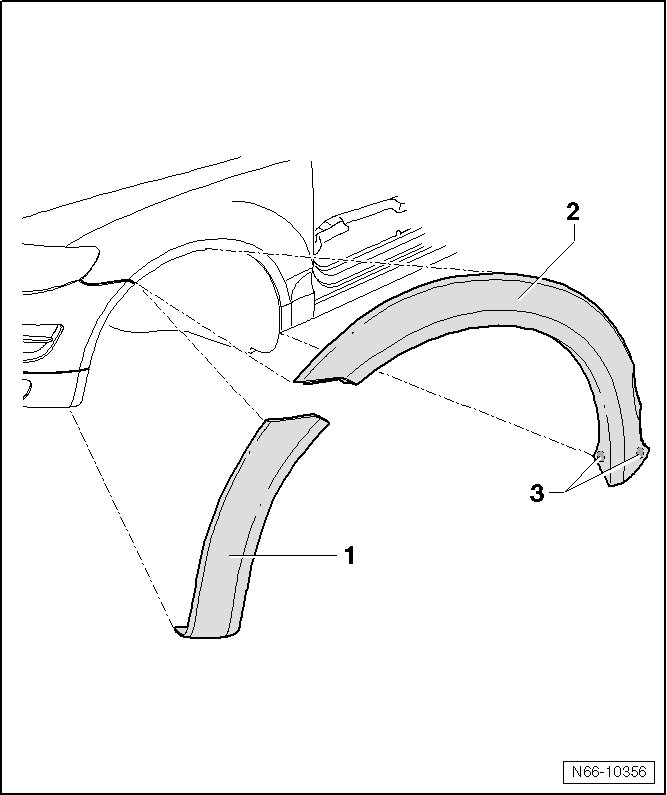

Front Wheel Housing Extension
Wheel Housing, Fender and Sill Panel Extensions
Front Wheel Housing Extension
• Removal And Installation Is Described Only For The Left-Hand Side. Removing And Installing On The Right Side Is Identical.
Removing
CAUTION!
Before beginning the work, clean and seal off all surrounding part.
Never use cutting wire to remove the wheel housing extension.

- Warm The Wheel Housing Extension With A Hot Air Gun (V.A.G 1416) Before Removing.
- Lift One Corner Of The Wheel Housing Extension - 1 - Or - 2 - With The Trim Removal Wedge (3409).
- Grab The Corner And Carefully Pull The Extension - 1 - Or - 2 - Off.
- Take The Cutting Wire (357 853 999 A) With The Handles (V.A.G 1351/1) And Cut The Adhesion Points - 3 - (Quantity: 2) On The Fender Wheel Housing Extension - 2 -.
Installing
- Preparing Components For Adhesion, refer to --> [ Preparing Components for Adhesion ] Wheel Housing, Fender and Sill Panel Extensions
- Prep The New Part For The Adhesive. Refer To --> [ New Part, Preparing for Adhesive ] Wheel Housing, Fender and Sill Panel Extensions
- Preparing Bodywork For Adhesion, refer to --> [ Preparing Bodywork for Adhesive ] Wheel Housing, Fender and Sill Panel Extensions
- Cleaning Instructions, refer to --> [ Cleaning Instructions ] Wheel Housing, Fender and Sill Panel Extensions
- Minimum Curing Time, refer to --> [ Minimum Curing Time ] Wheel Housing, Fender and Sill Panel Extensions
- Paint Damage, Repairing, refer to --> [ Paint Damage, Repairing ] Wheel Housing, Fender and Sill Panel Extensions